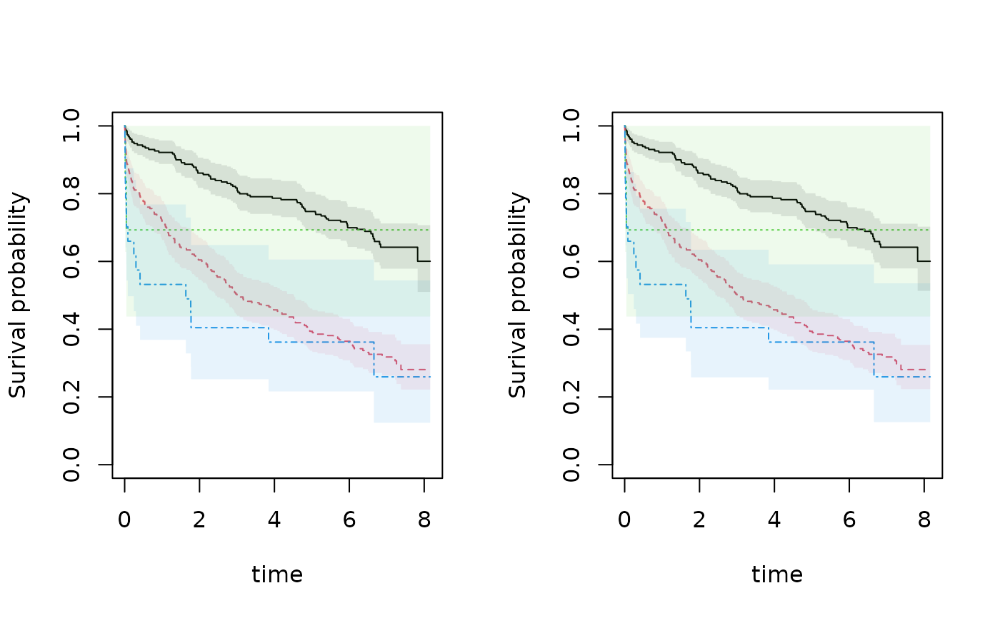

Kaplan-Meier with robust standard errors Robust variance is default variance and obtained from the predict call
Examples
library(mets)
data(sTRACE)
sTRACE$cluster <- sample(1:100,500,replace=TRUE)
out1 <- km(Surv(time,status==9)~strata(vf,chf),data=sTRACE)
out2 <- km(Surv(time,status==9)~strata(vf,chf)+cluster(cluster),data=sTRACE)
summary(out1,times=1:3)
#> $pred
#> [,1] [,2] [,3]
#> [1,] 0.9216911 0.8606809 0.8171022
#> [2,] 0.7180838 0.6043700 0.5032911
#> [3,] 0.6930406 0.6930406 0.6930406
#> [4,] 0.5320165 0.4044111 0.4044111
#>
#> $se.pred
#> [,1] [,2] [,3]
#> [1,] 0.01768107 0.02279610 0.02545049
#> [2,] 0.02911535 0.03163815 0.03234100
#> [3,] 0.16275118 0.16275118 0.16275118
#> [4,] 0.09970269 0.09739478 0.09739478
#>
#> $lower
#> [,1] [,2] [,3]
#> [1,] 0.8876802 0.8171413 0.7687123
#> [2,] 0.6632273 0.5454355 0.4437332
#> [3,] 0.4373867 0.4373867 0.4373867
#> [4,] 0.3684728 0.2522477 0.2522477
#>
#> $upper
#> [,1] [,2] [,3]
#> [1,] 0.9570051 0.9065405 0.8685383
#> [2,] 0.7774775 0.6696724 0.5708430
#> [3,] 1.0000000 1.0000000 1.0000000
#> [4,] 0.7681477 0.6483640 0.6483640
#>
#> $times
#> [1] 1 2 3
#>
#> attr(,"class")
#> [1] "summarypredictrecreg"
summary(out2,times=1:3)
#> $pred
#> [,1] [,2] [,3]
#> [1,] 0.9216911 0.8606809 0.8171022
#> [2,] 0.7180838 0.6043700 0.5032911
#> [3,] 0.6930406 0.6930406 0.6930406
#> [4,] 0.5320165 0.4044111 0.4044111
#>
#> $se.pred
#> [,1] [,2] [,3]
#> [1,] 0.01642282 0.02138888 0.02742317
#> [2,] 0.02592998 0.02848191 0.02901227
#> [3,] 0.13371319 0.13371319 0.13371319
#> [4,] 0.09483034 0.08233461 0.08233461
#>
#> $lower
#> [,1] [,2] [,3]
#> [1,] 0.8900585 0.8197641 0.7650835
#> [2,] 0.6690187 0.5510470 0.4495228
#> [3,] 0.4748215 0.4748215 0.4748215
#> [4,] 0.3751466 0.2713475 0.2713475
#>
#> $upper
#> [,1] [,2] [,3]
#> [1,] 0.9544479 0.9036401 0.8726579
#> [2,] 0.7707472 0.6628529 0.5634909
#> [3,] 1.0000000 1.0000000 1.0000000
#> [4,] 0.7544825 0.6027266 0.6027266
#>
#> $times
#> [1] 1 2 3
#>
#> attr(,"class")
#> [1] "summarypredictrecreg"
par(mfrow=c(1,2))
plot(out1,se=TRUE)
plot(out2,se=TRUE)
